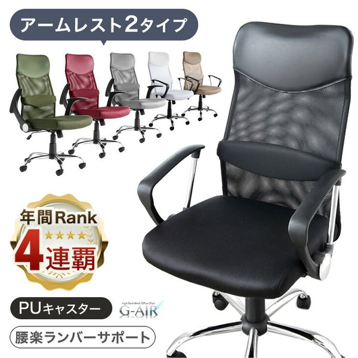
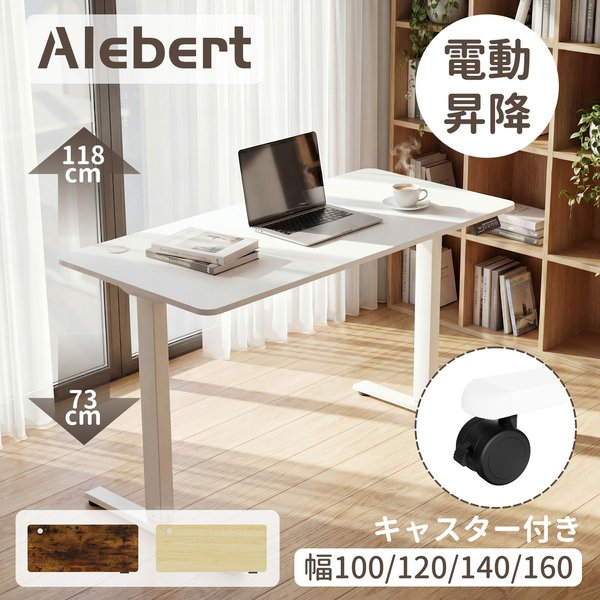
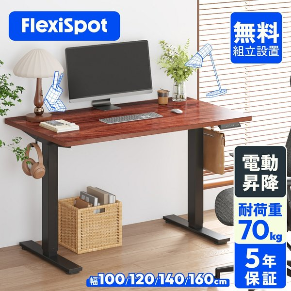
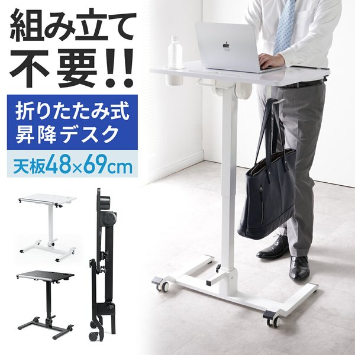
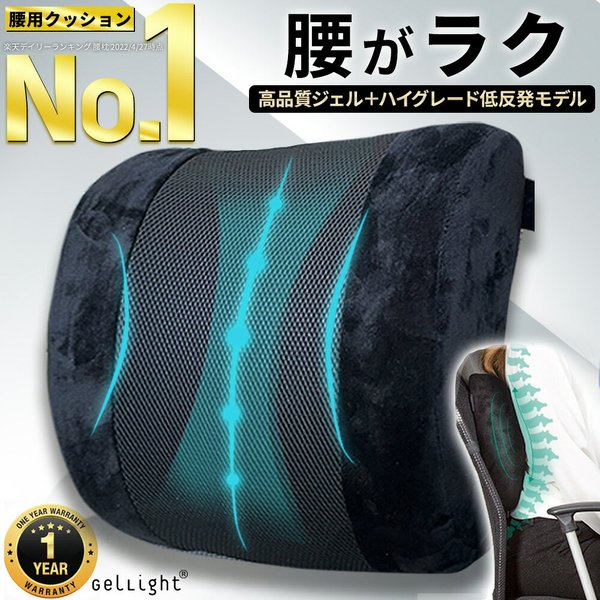
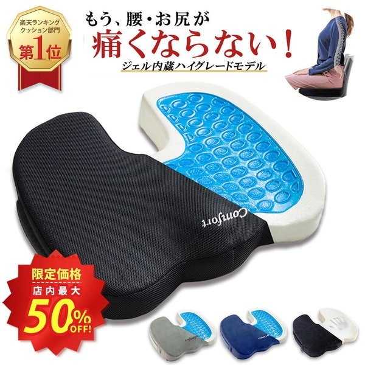
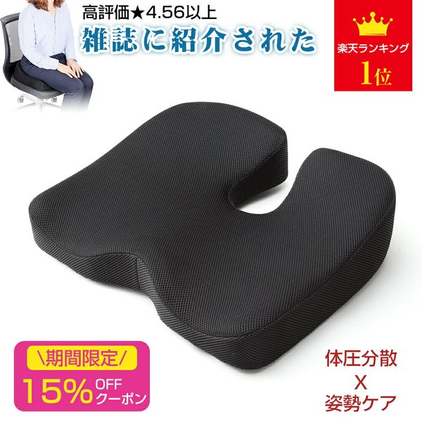
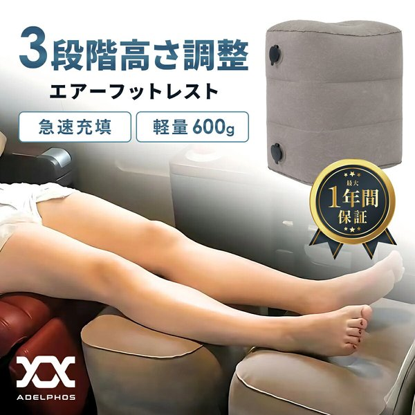
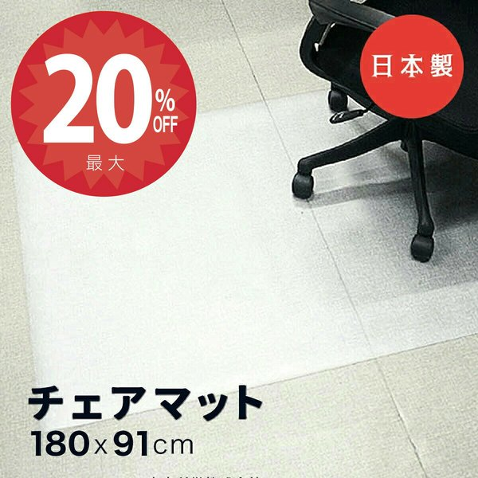

【2026年ブラックフライデー】腰痛・肩こりを根本から減らす！オフィスチェア・電動昇降デスク・ゲルクッション＆フットレスト10選
在宅ワークや長時間のデスク作業で、腰と肩の疲れが抜けない日が続いていませんか。痛みの原因は姿勢そのものですが、姿勢は「椅子・机の高さ・足元」の3つで決まります。
選ぶ軸は、腰を支える形状か、高さを変えられるか、そして足元が安定するかです。オフィスチェアは、ランバーサポートとヘッドレストの有無で体の預け方が変わります。メッシュは通気性がよく、長時間座っても蒸れません。昇降デスクは、立って作業する時間を1日に30分つくるだけでも、腰への負担が変わります。電動式はメモリー機能で同じ高さに戻せるため、家族で共有する場合にも向いています。クッション類は、椅子を買い替えずに腰の支えを足せるのが利点です。ランバーサポートは背中のカーブを埋め、ゲルクッションは座面の圧を分散します。足元にフットレストを置いて、太ももと床の間にすき間をつくると、骨盤が立ちやすくなります。椅子のキャスターで床が傷むのが気になる場合は、チェアマットを敷いておくと傷と騒音の両方を抑えられます。
本記事では、楽天市場で人気・高評価の椅子と昇降デスクの10選を、実売価格とレビュー評価つきで写真付き紹介します。
- おすすめ10選 スペック・特徴比較表
- BEST 1｜SIHOO M57 オフィスチェア 全メッシュ（3Dアームレスト・2Dヘッドレスト）
- BEST 2｜腰楽ランバーサポート オフィスチェア（アーム2タイプ選択・PUキャスター）
- BEST 3｜Alebert 電動昇降デスク（幅100/120/140/160・キャスター付き）
- BEST 4｜Flexispot EF1 電動昇降デスク（組立設置無料・幅100/120/140/160）
- BEST 5｜サンワダイレクト 昇降デスク ガス圧 69cm幅（完成品・折りたたみ・キャスター付き）
- BEST 6｜GelLight 背もたれクッション ゲル ランバーサポート
- BEST 7｜MYGEAR ゲルクッション 椅子用 低反発（洗えるカバー・大きめ）
- BEST 8｜ikstar 椅子クッション 座布団（低反発・骨盤サポート・猫背対策）
- BEST 9｜ADELPHOS エアー フットレスト（折りたたみ・収納袋付き・空気漏れ保証）
- BEST 10｜日本製 チェアマット 透明 約1800×910mm（床保護・キャスター傷防止）
- 【読者負担0円】買わなくても得する無料サービス
- まとめ：椅子と昇降デスクの10選の選び方
| 順位 | 商品名 | ブランド | 最大の特徴・おすすめ理由 | 総合評価 |
|---|---|---|---|---|
| BEST 1 | SIHOO M57 オフィスチェア 全メッシュ（3Dアームレスト・2Dヘッドレスト） | SIHOO | 全面メッシュで蒸れない | 4.51 |
| BEST 2 | 腰楽ランバーサポート オフィスチェア（アーム2タイプ選択・PUキャスター） | タンスのゲン | 腰を支えるランバーサポート | 4.42 |
| BEST 3 | Alebert 電動昇降デスク（幅100/120/140/160・キャスター付き） | Alebert | 電動で高さを無段階に変えられる | 4.44 |
| BEST 4 | Flexispot EF1 電動昇降デスク（組立設置無料・幅100/120/140/160） | Flexispot | 組立・設置が無料 | 4.49 |
| BEST 5 | サンワダイレクト 昇降デスク ガス圧 69cm幅（完成品・折りたたみ・キャスター付き） | サンワダイレクト | 完成品ですぐ使える | 4.74 |
| BEST 6 | GelLight 背もたれクッション ゲル ランバーサポート | GelLight | ゲルと低反発の2層構造 | 4.51 |
| BEST 7 | MYGEAR ゲルクッション 椅子用 低反発（洗えるカバー・大きめ） | MYGEAR | ゲルで体圧を分散 | 4.42 |
| BEST 8 | ikstar 椅子クッション 座布団（低反発・骨盤サポート・猫背対策） | ikstar | 骨盤を支える形状 | 4.57 |
| BEST 9 | ADELPHOS エアー フットレスト（折りたたみ・収納袋付き・空気漏れ保証） | ADELPHOS | 空気式で硬さを調整できる | 4.47 |
| BEST 10 | 日本製 チェアマット 透明 約1800×910mm（床保護・キャスター傷防止） | P-fun（日本製フロアシート） | 日本製の硬質塩ビでキャスターが沈みにくい | 4.65 |
SIHOO M57 オフィスチェア 全メッシュ（3Dアームレスト・2Dヘッドレスト）

背もたれと座面をメッシュで仕上げたオフィスチェアで、3Dアームレストと2Dヘッドレストが付きます。メッシュは通気性がよく、夏でも背中が蒸れません。アームレストは前後・左右・高さを動かせるため、キーボードに合わせて肘の位置を決められます。ヘッドレストがあると、リクライニングしたときに首を預けられ、長時間の作業でも疲れにくくなります。楽天市場での実売価格は約24,999円（2026年11月時点）。
- 全面メッシュで蒸れない
- 3Dアームレストで肘の位置を合わせられる
- 2Dヘッドレスト付き
- 組み立てが必要なので、工具を用意して30分ほど見ておく
腰楽ランバーサポート オフィスチェア（アーム2タイプ選択・PUキャスター）

腰を支えるランバーサポートを組み込んだオフィスチェアで、アームは肘付きと肘なしの2タイプから選べます。床を傷つけにくいPUキャスター付きで、フローリングでも音が出にくいのが特徴です。座面はコンパクトで、部屋の隅に置いても圧迫感がありません。4年連続で売れている定番で、初めてのワークチェアとして選びやすい価格です。楽天市場での実売価格は約6,999円（2026年11月時点）。
- 腰を支えるランバーサポート
- アームを2タイプから選べる
- PUキャスターで床にやさしい
- メッシュ素材のため、冬は座面にひんやり感じることがある
Alebert 電動昇降デスク（幅100/120/140/160・キャスター付き）

ボタンひとつで高さを変えられる電動昇降デスクです。幅は100cmから160cmまで選べ、キャスター付きなので掃除のときに動かせます。座って作業する高さから、立って作業する高さまで連続して変えられるため、1日のなかで姿勢を切り替えられます。天板が広いので、モニターとキーボードを並べても余裕があります。楽天市場での実売価格は約13,999円（2026年11月時点）。
- 電動で高さを無段階に変えられる
- 幅100〜160cmから選べる
- キャスター付きで移動できる
- 天板が重いので、組み立ては2人で行う
Flexispot EF1 電動昇降デスク（組立設置無料・幅100/120/140/160）

電動昇降デスクの定番ブランド、FlexispotのEF1です。組立と設置が無料で付くため、届いたその日から使えます。高さをメモリーできるリモコン付きで、座る高さと立つ高さを登録しておけば、ボタンひとつで切り替えられます。天板と脚の剛性が高く、昇降中にぐらつきにくいのが特徴です。楽天市場での実売価格は約30,800円（2026年11月時点）。
- 組立・設置が無料
- 高さをメモリーできる
- 剛性が高く昇降中も安定
- 本体価格は上がるため、設置込みの総額で比較する
サンワダイレクト 昇降デスク ガス圧 69cm幅（完成品・折りたたみ・キャスター付き）

完成品で届く、ガス圧式のコンパクト昇降デスクです。天板は幅69cm・奥行49cmで、ノートPCとマウスを置くのに十分な広さがあります。レバーを握るだけで高さを変えられ、折りたたんでキャスターで移動できるため、使わないときは部屋の隅に寄せられます。天板の角度を変えられるので、タブレットを立てて資料を見るのにも向いています。楽天市場での実売価格は約22,800円（2026年11月時点）。
- 完成品ですぐ使える
- 折りたたみ＋キャスターで移動できる
- ガス圧で高さを無段階に調整
- レビューは23件と少なく、天板69cm幅はモニター2台には狭い
GelLight 背もたれクッション ゲル ランバーサポート

ゲルと低反発ウレタンを組み合わせた、背もたれ用のランバーサポートです。背中のカーブに沿って沈み込むため、椅子と腰のあいだのすき間を埋められます。付属のベルトで椅子に固定でき、車のシートにも付けられます。椅子を買い替えずに腰の支えを足せるので、まず試したい人に向いています。楽天市場での実売価格は約4,380円（2026年11月時点）。
- ゲルと低反発の2層構造
- ベルトで椅子に固定できる
- 車のシートにも使える
- 椅子の背の形状によっては、少し浮いて感じることがある
MYGEAR ゲルクッション 椅子用 低反発（洗えるカバー・大きめ）

座面の圧を分散するゲルクッションで、大きめサイズの低反発タイプです。長時間座ってもお尻や太ももが痛くなりにくく、通気性のあるカバーは洗濯できます。オフィスチェアだけでなく、車の運転席やダイニングチェアにも使えます。座面が硬い椅子の上に置くだけで、座り心地が変わります。楽天市場での実売価格は約2,980円（2026年11月時点）。
- ゲルで体圧を分散
- カバーを洗濯できる
- 大きめで座面を覆える
- 厚みがあるぶん、座面が高くなるので足元の高さを確認
ikstar 椅子クッション 座布団（低反発・骨盤サポート・猫背対策）

低反発ウレタンを使った椅子用の座布団で、骨盤まわりを支える形状です。座面の後ろがくぼんでいるため、骨盤が後ろに倒れにくく、背筋が自然に伸びます。オフィスチェアにもダイニングチェアにも置け、カバーは外して洗えます。座り姿勢を変えるきっかけとして、椅子の上に1枚足すだけで始められます。楽天市場での実売価格は約3,980円（2026年11月時点）。
- 骨盤を支える形状
- 低反発で沈み込みが少ない
- カバーを洗える
- 姿勢矯正は補助程度なので、椅子の高さ調整と併用する
ADELPHOS エアー フットレスト（折りたたみ・収納袋付き・空気漏れ保証）

空気を入れて使うフットレストで、使わないときは折りたたんで収納袋にしまいます。デスクの下に置いて足を乗せると、太ももと床の間にすき間ができ、骨盤が立ちやすくなります。飛行機や高速バス、車中泊でも使えるため、旅行用とデスク用を兼ねられます。空気量で硬さを変えられるので、靴を履いたままでも足が痛くなりにくいです。楽天市場での実売価格は約2,980円（2026年11月時点）。
- 空気式で硬さを調整できる
- 折りたたんで収納袋に入る
- 旅行・車中泊にも使える
- 空気式なので、尖ったものの上ではパンクに注意する
日本製 チェアマット 透明 約1800×910mm（床保護・キャスター傷防止）

椅子のキャスターによる床の傷とへこみを防ぐ、日本製の透明チェアマットです。約1800×910mmの大判で、椅子を前後に動かしても床から外れません。厚さ1.5mmの硬質塩ビで、キャスターが沈みにくく、床暖房にも対応しています。透明なので、フローリングの木目を隠さずに敷けます。楽天市場での実売価格は約2,890円（2026年11月時点）。
- 日本製の硬質塩ビでキャスターが沈みにくい
- 1800×910mmの大判
- 床暖房に対応
- 大判で重いため、敷くときは2人で広げる
この記事の商品を買う前に、まずは無料で得する選択肢をチェック。どれも登録・利用は0円で、無料期間中に解約すれば料金はかかりません。読みたい雑誌がある人、ポイントを貯めたい人、アンケートなら気軽という人、それぞれに合うものを選べます。
初回31日無料・無料期間中に解約すれば0円 → 楽天ポイントモール｜登録無料で毎日ポイ活
買い物なしでもポイントが貯まる無料サービス → 楽天インサイト｜アンケートに答えてポイント
登録無料・すきま時間のアンケートで貯まる → 楽天カード｜年会費永年無料
新規発行・年会費ずっと0円 →
4つのサービスの違いと使い分けは「出費0円で得する！買わずにポイントが貯まる無料サービス厳選4選」でまとめています。
💡 まとめ：椅子と昇降デスクの10選の選び方
腰と肩の疲れは、椅子・机・足元の3点を揃えると、驚くほど軽くなります。予算が限られているなら、まず椅子を変えてください。ランバーサポートとヘッドレストがあり、座面の高さと奥行きを調整できるものを選ぶと、体型に関係なく合わせられます。次に、昇降デスクで立つ時間を1日30分だけつくります。電動式はメモリー機能があると、元の高さに戻すのが面倒になりません。クッションは、椅子の穴を埋める補助として使うのが正解で、へたってきたら交換します。フットレストは、足を置いたときに膝が90度より少し開く高さが目安です。床の傷とキャスターの音が気になるなら、チェアマットを敷いてください。全部を一度に揃えず、痛みが出る場所から順に変えていくのが、無理なく続けられる買い方です。
楽天市場では「5と0のつく日」や「お買い物マラソン」などのキャンペーンに合わせて購入すると、ポイント還元が最大化してお得に手に入ります。ぜひチェックしてみてくださいね。